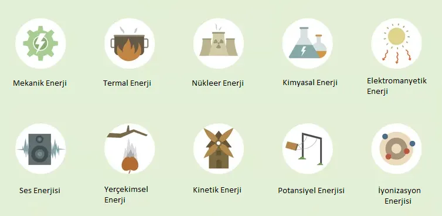
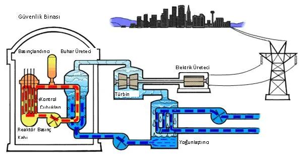

Önceki makalemizde, çok temel bir soru olan Enerji Nedir? ’e yanıt aramış ve en genel manada da, enerjinin, herhangi bir sistem için sabit bir değer olup, bu sistem için bir kısıtı ifade ettiğinden bahsetmiştik. Bu makalemizde ise buradan devam ederek, enerjinin korunumu ilkesini ve enerji türleri arasındaki dönüşümleri inceleyeceğiz.
Enerjinin korunum ve dönüşümünü daha iyi kavrayabilmek için şöyle bir örnek olay tanımlamak istiyorum:
Bir sınıf düşünelim ve öğretmenin elinde belirli sayıda kalem olsun. Öğretmen, okulun ilk günü, elindeki bu kalemleri sınıftaki her öğrenciye, rastgele bir şekilde dağıtıyor. Tüm öğrenciler sınıfa girip kalemlerini aldıktan sonra da sınıfa dışarıdan başka kalem getirilmesi yasaklanıyor. Ama yine de öğrencilerin kendi aralarında kalem değişikliği yapmasına izin veriliyor. Böylece sınıftaki toplam kalem sayısının sabit tutulması hedefleniyor. Ancak öğrencilerin hepsi ders notlarını yalnız bu kalemleri kullanarak tuttukları için, dönem sonuna gelindiğinde toplam kalem sayısının azaldığı görülüyor.
Yukarıdaki örnek durumda, öğretmenin elindeki kalemlerin sayısını, herhangi bir sisteme başlangıçta verilen enerji miktarı olarak tahayyül edebiliriz. Böylece kapalı, dışarıyla bağlantısı kesilmiş, bir sistem için bu miktarın görünürde hep sabit kalmasını bekleriz. Bu da esasen sistemdeki enerji miktarının korunumu olarak söylenir.
Ancak enerji her zaman için sisteme ilk verildiği formdaki gibi kalmak durumunda değildir. Başka türlü enerji formlarına dönüşebilir. Örneğin yukarıdaki durumda, kalemlerin içindeki yazı malzemesi, mürekkep, grafit vs. kağıdın üzerine yazı olarak geçiriliyor. Bu da bu malzemenin kalemde tükeniyor gibi görünmesine rağmen aslında kağıdın üzerinde varlığını sürdürmesiyle, sistemde başka bir formda var olmaya devam ettiğini göstermektedir. Kısacası enerji, bir türden başka bir türe dönüşebilmektedir.
Önceki makalemizde toplam enerji formülü ile uğraşırken, enerjiyi 2 parça olarak incelemiştik: potansiyel ve kinetik enerji. Yerden bir miktar yüksekte bulunan cismin yer çekim kuvveti ve kütlesi ile de bağlantılı olarak bir potansiyel enerjisi mevcuttur. Eğer bu cisim bu yükseklikten yere doğru düşecek olursa, cisim hızlanır ve kütlesine de bağlı olarak bir kinetik enerji oluşmaya başlar. Bu ise temelde potansiyel enerjinin kinetik enerjiye dönüşümü olarak anlaşılır.
Enerji Türleri

Mekanik enerji aslında yukarıda potansiyel ve kinetik enerji olarak tanımladığımız değerlerin toplamını ifade ediyor. Termal enerji ise farklı 2 sistem arasındaki sıcaklık farklılığından meydana çıkıyor. Nükleer enerji, bazı radyoaktif elementlerin fizyon veya füzyon tepkimeleri sonucunda oluşturduğu enerji çeşidini ve elektromanyetik enerji de ışık veya elektromanyetik dalgaların oluşturduğu enerjiyi ifade ediyor. Ses dalgalarının meydana getirdiği enerji ses enerjisi olarak söylenirken, kimyasal enerji de atom veya moleküller arasındaki kimyasal etkileşimler sonucunda oluşan enerjiyi tanımlıyor.
Nükleer Enerji ve Dönüşüm Örneği
Bir sistem içerisinde bu enerji türleri arası dönüşlere bir örnek verelim. Nükleer enerji santralleri tüm dünyada özellikle 2. dünya savaşı sonrasında çok aktif bir şekilde kurulmaya başlanmış ve Amerika, Fransa, Rusya, Çin gibi devletler bu enerji santralleri vasıtasıyla enerji ihtiyaçlarının bir kısmını karşılamaya halen de devam etmektedirler. Şu anda dünya genelinde mevcut olan 440 nükleer reaktör 30 farklı ülkede aktif olarak kullanılmaktadır. Bu reaktörlerin çalışma prensibi temelde uranyum, toryum gibi radyoaktivitesi yüksek olan elementleri zincirleme fizyon tepkimelerine kontrollü bir biçimde sokarak, ısı enerjisinin açığa çıkarılması üzerine kuruludur. Bu ısı enerjisini de suyu buharlaştırarak türbinleri çevirip buradan jeneratörler vasıtasıyla elektrik enerjisine çevirmek hedeflenir.

Görüldüğü üzere, radyoaktif atomların enerjileri kullanılarak önce termal enerjiye bir dönüşüm var. Ardından su buharının türbinleri döndürmesiyle de mekanik enerjiye bir dönüşüm söz konusu. En son olarak da bu enerji, bizim kullanımımıza sunulan elektrik enerjisi olarak karşımıza çıkıyor.
Bu makalemizde enerjinin korunumu ve türler arasında dönüşümünü inceledik. Bir sonraki makalemizde görüşmek üzere.